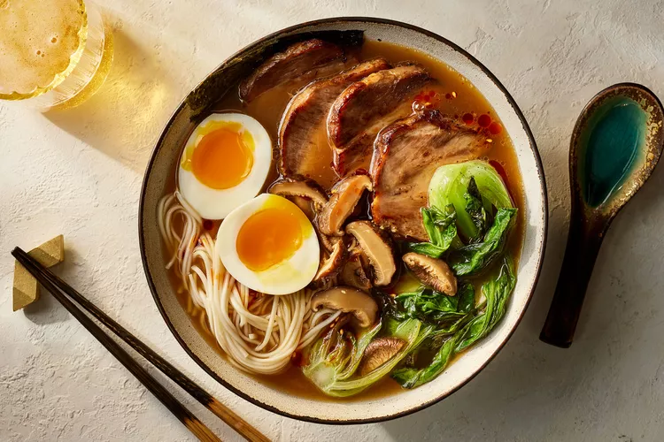

Tonkotsu Ramen
Buljongen för tonkotsu ramen är baserad på fläskben, och tonkotsu (豚骨/とんこつ) på japanska betyder "fläskben". Soppbuljongen bereds genom att koka benen i vatten under en betydande tid, upp till arton timmar, och buljongen är vanligtvis grumlig till utseendet .
Shoyu Ramen

Långtidskokt buljong på färska ben av nöt, gris och kyckling och smaksatt med soja, mirin, vitlök och ingefära. 100% naturlig. Tack vare den långa tillagningstiden av Salsus buljonger får de djup och vacker färg som är perfekt för asiatiska rätter.
Shio Ramen
I sin kärna är Shio ramen helt enkelt en klar ramsoppa med buljong, starkt kryddad med salt , vilket är vad Shio betyder på japanska. Shio Ramen-buljong kan göras av valfritt antal proteiner eller ingredienser, från rostad kyckling till tonkotsu-ramen från fläsk, eller fisk- och grönsaksbaser, men den gemensamma nämnaren är alltid salt.